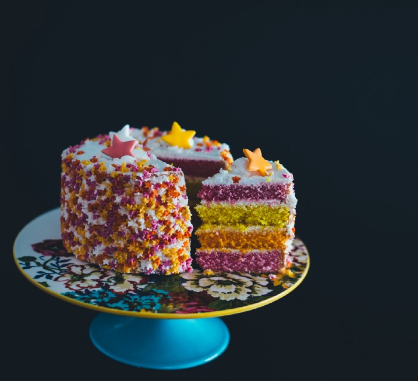

Dr. Linda Dahl
Jul 4 . 4 min read . Listen
How do we decide what we like to eat?

As far back as I can remember, I’ve experienced the world primarily through my mouth. When I was young, I used to scramble up to the kitchen counter to consume slice after slice of warm, homemade bread slathered in salty butter. My first bite into a gingersnap was a revelation, the crisp shell giving way to the chewy, aromatic center by the simple movement of tongue and jaw. My sense of taste felt extrasensory–a superpower meant for more than mere sustenance. Reeling in bliss, I felt perversely grateful that something–one thing–could give me so much pleasure.
Not everyone has the same experience. Our sense of taste is complex. But whether you’re the average person with 4000 taste buds or a super taster with nearly 10,000, it all starts with chemical reactions.
We sense the five basic tastes–sweet, salty, bitter, sour, and umami–through chemoreceptors in our tastebuds. Tastebuds are located primarily on our tongue, but they are also sprinkled all over our mouth, digestive system, and even testes, although those taste receptors aren’t connected to your brain.
Each chemoreceptor has its own unique sensitivity, making some able to taste more salty than sweet and others, more sour than bitter. Some sense combinations of tastes, like whatever Sour Patch kids are. But basic taste is just the foundation.
There is also the way food feels in our mouths. Temperature matters (consider cold pizza or hot ice cream.) As does texture. (Crunchy tastes different than chewy. Just ask bacon. And potato chips.) We have receptors for these other sensations all over our mouths as well.
The five tastes with differing intensity levels combined with all the other sensations provide us with endless combinations.